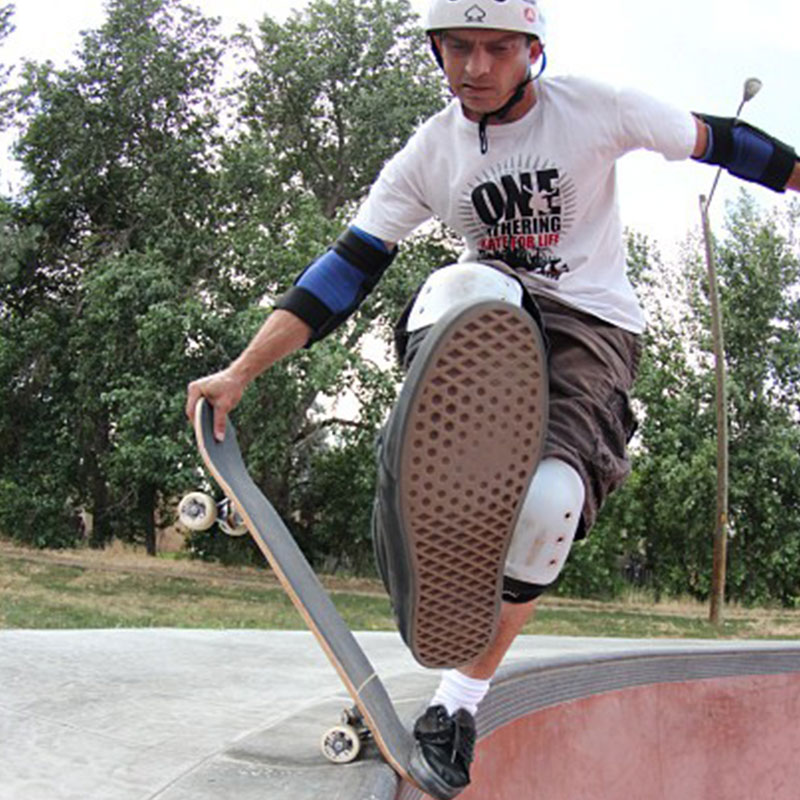

<div id="content">
  <div id="main">
    <div class="container">
      <div class="one_third">
						
      </div>

      <div class="two_third last">
						<h1>Lyle Hansberger</h1>
						<p><strong style="font-family: Helvetica;">MEET LYLE...&nbsp;</strong><span>Skateboarding for 31 years.&nbsp;I set up all the downhill with Surf Rodz Trucks with a 50 degree base plate on the front, and 35 degree base plate on the back. Wheels 76a-76mm Seismic     Hot Spots. Bones Reds bearings. . My favorite boards right now are the revival and the hooligan. The revival because it's a great all around park board.     I've used it for downhilling, mini mega ramp, and I also use it as the top deck on my snow skate. My favorite neversummer downhill board is the hooligan.     The drop down, drop through sets you super low to the ground. Making foot braking at high speeds a dream. Its w concave makes it easy to center your     foot without looking. The shorter wheelbase makes it really grippy in the turns. And the kick tails on the ends are great for when your kicking around     town. So too are my favorite for sure.&nbsp;</span>
						</p>
						<p><b style="font-family: Helvetica;">LYLE'S FAVORITE NS BOARD IS...&nbsp;</b><span>The Revival, Hooligan, Deviant, Clutch, and the Avalanche.&nbsp;I set up the Revival with Independent 149 Trucks. Wheels, Bones SPF 60mm, and Reds bearings.&nbsp;I have always ridden half pipes, bowls, skate parks, streets, vert, curbs etc.. About five years ago I tried longboarding downhill and was hooked on my     first run. Now I spend all my free time going down hilling. The longer the hill the better. Some of the roads where I live in Colorado are 11-12 miles     long. Cursing at 30 to 50 mph for 25 to 30 minutes without pushing once. Wonderful living so close to the mountains. Go Skateboarding Have Fun.</span>
						</p>
					</div>


    </div>
  </div>
</div>